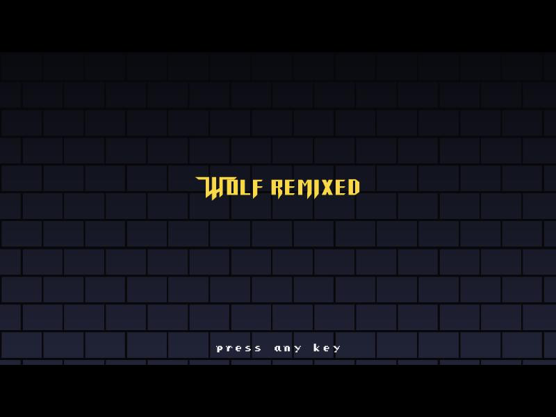
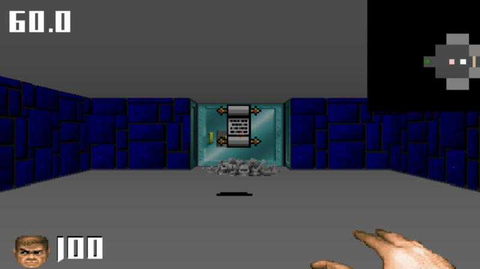

Wolf Remixed
Completion ▰▰▰▰▰▰▰▱▱▱ 70% · presentable, but player damage is switched off
Wolf Remixed is my Wolfenstein 3D style raycasting engine. I first wrote it back in 2013 in C# and XNA 4.0, with an entity-component system (Artemis) holding the game logic together, and then left it sitting on a hard drive for almost a decade.
In early 2022 I dug it out and decided to make it run again. That meant moving from XNA to MonoGame, from xTile maps to Tiled, from FMOD to MonoGame's own sound effects, and fixing more than 600 compile errors before the first build. The raycaster itself still worked fine; the game states, ECS and resolution scaling were the hard part.
By the end it had floor and ceiling texture mapping, menus, sounds and a playable remix of classic 90s shooter references. There is a "Final Version" 1.0 build on the releases page if you want to wander its corridors.
The browser version runs the same C# code through KNI (Blazor WebAssembly). Controls: click to capture the mouse, mouse to turn, W/S move, A/D strafe, left click fires, right click opens doors, 1–9 switch weapons, M toggles the map, Esc for the menu.
Features
- Wolfenstein-style DDA raycaster with textured walls, plus textured floor and ceiling (added February 2022).
- Distance shading, configurable per map (cutoff, divisor, ceiling and floor colour).
- Sliding doors, keys, secret walls ("You found a secret area!") and an automap with zoom.
- A zoo of borrowed enemies: Wolf guards, Doom marine, Blake Stone scientists and furniture monsters (table guy, cabinet guy, egg guy, statue guy), Catacomb bats, blue monster and zombies.
- Enemy AI as a state machine: Stand, StandHidden, Path, Chase, PrepareFire, Fire, Pain, Die, BreakFree.
- Weapons: Doom punch, Doom shotgun, Duke shotgun, fireballs and more, with a HUD face that reacts.
- Zombie trigger areas that keep spawning zombies every 3 seconds while you stand in them.
- Gravestone message triggers that pause the game and show a quote, and scripted "story" sequences (fade, eye-height drop, text).
- Cheat codes, a main/options/escape menu, random loading screens, and a web build via KNI.
Under the hood
The cheat codes are my own spin on the classics, read from a rolling key buffer in Engine/SubSystems/InputHandler.cs:
if (bufferString.Contains("fxdqd"))
{
HealthPoints playerHp = controlledEntity.GetComponent<HealthPoints>();
playerHp.IsImmortal = !playerHp.IsImmortal;
mKeyBuffer.Clear();
}
if (bufferString.Contains("fxvanitar")) ...
if (bufferString.Contains("fxguns")) ...They answer with "DEGREELESSNESS MODE ON" and "impulse 9 activated..", in RaycastGame.cs.
The whole distance shading is four lines in Engine/Datastructures/Tilemap.cs:
public float GetShadingFactor(double dist)
{
dist *= 4;
dist += 48;
float lerpFact = (float)(dist / 128);
return lerpFact;
}Shading the floor and ceiling too was tried and given up on, still commented out in Engine/Managers/Raycaster.cs:
/* TODO: Make this work and not slow down everything
double dist = HorizontalToDist(screenHeight - y);
float factor = mTilemap.GetShadingFactor(dist);Player damage is disabled in two places, so enemies shoot at you for show (RaycastGame.cs and States/Fire.cs):
//PlayerHealthPoints.ReceivedDamage += PlayerReceivedDamage; // TODO: enable for damage
// mPlayerHealthPoints.DealDamage(CalculateDamage(dist),mSelf); // TODO: enable for damageThe ending, from RaycastGame.cs:
"You did it. You played through this dream of mine.\n\nThanks. And keep on rolling.."Ideas & inspirations
It is a remix in the literal sense: the asset folders are named Wolf, Doom, BlakeStone, Catacomb, Duke and Zelda (the Zelda old man, a Zelda stone wall, "hunt_killed" bodies). The loading screens rotate between id, Wolf and Blake Stone themes.
The gravestones in Content/Maps/map1.tmx are a pile of game and film quotes: "The grave of a spoony bard!", "War. War never changes.", "I never asked for this.", "I AM ERROR", Tassadar's "Aiur shall not fall!", Manny Calavera's "enjoy the trip", and Lester Moore's "four slugs from a forty-four".
The README nice-to-have list wanted Shadow Warrior and Blood references, real push walls, lighting, skyboxes for outside areas, exploding barrels and destroyable walls. A commit titled "Ideas" added TODOs to the raycaster ("Idea - What happens when we change this?") and a link to the lodev.org push wall tutorial.
Where it started, where it ended
It started in 2013 as an XNA 4.0 engine with sub-projects, 2D top-down code and a hardware mouse, all of which the README says I cut when I revived it. The first 2022 commit is the repair job: 600+ compile errors, a rebuilt game state manager, xTile maps swapped for Tiled. Two weeks of commits later ("still not scaling", "Workaround for MessageTrigger") it had floor and ceiling textures, menus and sounds, and the last 2022 commit is literally "Make it presentable". In 2026 it got a KNI Blazor web build and a neutral title screen.
State of the repo
Last real work was February 2022; the 2026 commits only add the web build and an F1 controls overlay. The README to-do list is still open: missing sounds for the Duke shotgun and "Magic Hand", fullscreen, replacing the start screen, and "a nice end screen with link to youtube". The map list is just map1 and testmap. Player damage is commented out, floor shading is disabled for speed, and a few Primitives2D.cs TODOs ("Do... *something*... with these") remain. For a "presentable" remix demo I'd call it about 70% there.
Is it a real game?
Playable demo. There is a full loop: walk the maps, collect keys, find secrets, shoot things, reach the end and get a thank-you credits screen. There is a death sequence too, but since player damage is switched off you can't actually lose. Two maps (one of them called testmap), so it is a short run.
Screenshots



Latest updates
- 2022-02-22 Make it presentable
- 2022-02-22 Add sounds and fix shading
- 2022-02-22 Menus and assets
- 2022-02-15 Removed FMOD, made steps towards a real menu
- 2022-02-14 Floor and ceiling texture mapping now working
- 2022-02-07 First commit